|
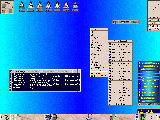 |
Submitted by Mikhael Goikhman. In the upper left is FvwmPager,
to the right some shaped icons, then FvwmButtons. Then below
FvwmButtons is FvwmWinList (growing up), menus showing usage of
the wm-icons package,
an example of the shaded application and TitleAtBottom.
Across the bottom is the gnome panel. The backgrounds of the root
and FvwmWinList were changed from within the xterm. |
 |
Submitted by Dan Espen, shows pixmap borders,
the Fvwm2 setup dialog using FvwmForm,
shaped icons, and a minimal use of fvwm modules. |
 |
Submitted by Michael Han,
multistyle decorations including HGradient titles and a nice
FvwmButtons, swallowing FvwmPager, procmeter and FvwmIconMan. Liberal
use of MiniIcons. |
 |
Submitted by Robert Ford,
shows gradients in menus and titlebars, FvwmWharf, FvwmTaskBar,
FvwmPager with pixmap backgrounds, some nice icons and mini-icons,
and an interesting purple/blue color scheme. |
 |
Submitted by Dominik Vogt,
shows soft gradients in menus and titlebars, a shaded window on the
left side of the top edge, FvwmButtons on the bottom edge, some menus
containing directory listings (updated every time they are opened)
and a bit of my .fvwm2rc in the top right shell. The colour palette
is one of about twenty I hijacked from CDE. Sub menus are nicely
centered around their parent item (use
'Popup menu-name item +100 c' for this effect).
|
 |
Submitted by Dominik Vogt,
another one of my palettes (a list can be seen in the Palette menu),
an example of the 'SubmenusLeft' menu style. I'm fixing a menu bug
in the xemacs window in the background while viewing our screenshots
page with netscape 8-)
|
 |
Submitted by Tomas Ögren,
A pretty lean theme without any annoying thick borders.
FvwmButtons, xmeter, xbuffy, gimp and some stuff on other pages.
|
|
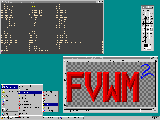 |
Submitted by Dominik Vogt.
Almost complete Windows 95 look and feel can be duplicated with
fvwm.
|
|
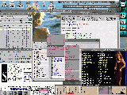 |
Submitted by Paul E. Johnson.
|
|
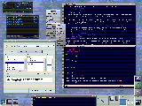 |
Submitted by Ives Aerts.
The screenshot
shows xmms, gfontsel, rxvt with vim and my FvwmButtons. The three
half-height buttons with the up arrows open up wharf-like button
arrays when pressed.
Menus and title bars are lightly gradiented and the (vector) titlebar
buttons were stolen from an old post to the fvwm mailing list. What
you can't see are all kinds of nifty keyboard shortcuts to popup/hide
mutt (mail reader), switch between windows and desks, etc.
|
|
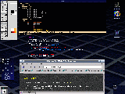 |
Submitted by Lee Willis.
A fairly simple setup, normally used with one window per page, very
easy on the eye, and hardly any decorations to get in your way :)
|
|
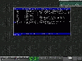 |
Submitted by Jason Kibblewhite.
This is my current favorite fvwm2 theme. The buttons and gradients
are based on an E fvwm theme which I thought looked quite spiffy.
As you can see I'm playing with FvwmButtons and FvwmTheme. I'm
never totally happy with what I come up with so this current
one has probably changed since this shot was taken.
|
|
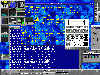
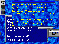 |
Submitted by Olivier Chapuis.
Two screen shots in a small screen (800x600). The first one all
panels up, the second one all panels down and the TaskBar hidden.
Panels are quite useful on such a screen.
The "Window Maker FvwmButtons" has four panels that
run only if I use it: this saves my battery.
|
|
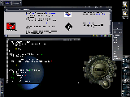 |
Submitted by Andre Bonhote.
My desktop shows (of course) fvwm2,
of which not much is being seen actually.
Only the root menu and the decorations are really fvwm-like.
I like gtk so I am using gnome's panels (top and bottom, left hand side).
There's an aterm window using transparency, gqmpeg and netscape, and, of
course, gkrellm running.
For the colors, I used grdb and grdb2fvwm, which takes gnome's colors
and fonts and puts it into my fvwm2rc. it's quite useful, I think.
|
 |
Submitted by Kendrick Vargas.
Fvwm2 integrated with GNOME (HelixCode) on RH 7.0 with FvwmGTK Menus,
FvwmPager swallowed into a gnome-panel and showing Mozilla M18 as the web
browser. GTK theme used is minEgtk.
|
|
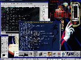 |
Submitted by Tenebrae.
Here's my latest screenshot running FVWM 2.2.4 under RedHat Linux 6.2. I
have a light marble GTK+ theme that I've extended manually onto my FVWM
buttons, and a custom icon or two. I made the blue Vampire Princess Miyu
background for the Eterm, and threw Vampire Princess Miyu skins that I
found onto Licq and xmms. I also customized the title bars a bit with a
textured background that fits in with the overall blueness of the Miyu
stuff.
|
|
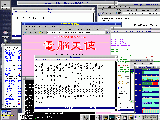 |
Submitted by MURAKAMI Tomokazu.
This is FVWM version 2.3.22. It's compiled with the --enable-kanji
option. With this, I can use Nipponese satisfactorily. Furthermore, I set
up Emacs to be able to use JIS X 0213."
|
|
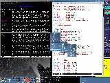 |
Submitted by An Thi-Nguyen Le.
Simple window and menu decors using diagonal and
backwards-diagonal gradients. Buttons are actual defaults
from fvwm. :) The modules used are FvwmButtons (I'd use the
$fg and $bg variables for the swallowed shell but that makes
it harder to read in this case), FvwmPager, FvwmIconMan (the
very bestest icon manager around). Dockapps are xpostit and
wmnetselect. On the right is GKrellM, nice themable stacked
system monitors.
|
|
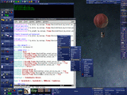 |
Another one by An Thi-Nguyen Le. I got really really
procrast-- I mean, bored, and fooled around with FvwmTheme for
a while. This particular scheme is borrowing heavily from the
Enlightenment theme AbsoluteE (the blue version) and makes
heavy use of the stretching pixmap feature of FvwmTheme. The
background is Tigert's Blue Space, the GKrellM theme is
something obscure called 3051.
|
|
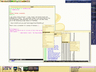 |
A third one by An Thi-Nguyen Le. Here's also a screenshot
of a mockup of Gnutopia, a rather cheery BlackBox theme,
with the large pager retracted (another thing I fooled
around with. Actually, all the buttons retract, just for
the heck of it). Cheery happy yellowy and all that.
|
 |
Submitted by S Anderson. After seeing An Thi-Nguyen Le's
screenshots(they are very nice BTW), I thought I would send one also
:-). It is fvwm 2.3.28
|
{kind=link}


{kind=link}
{kind=link}
{kind=link}
{kind=link}
{kind=link}
{kind=link}
{kind=link}
{kind=link}

{kind=link}
{kind=link}
{kind=link}
{kind=link}
{kind=link}